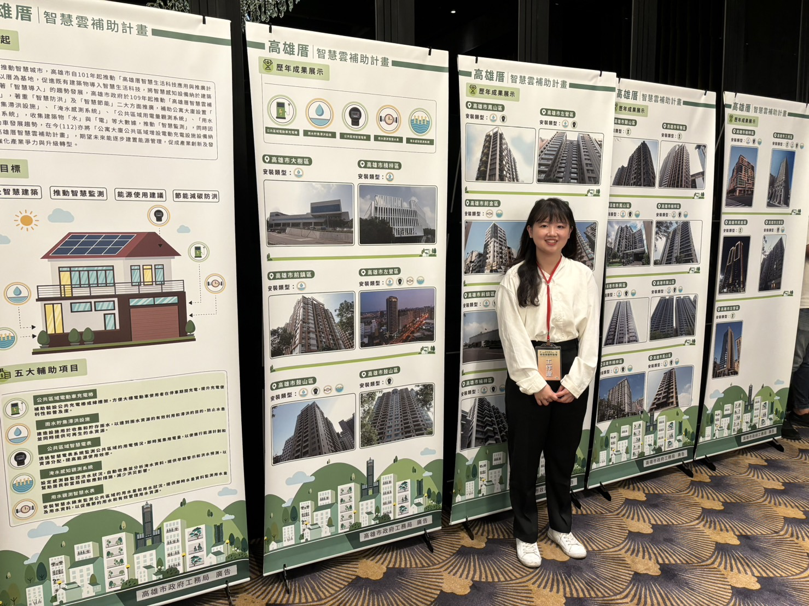
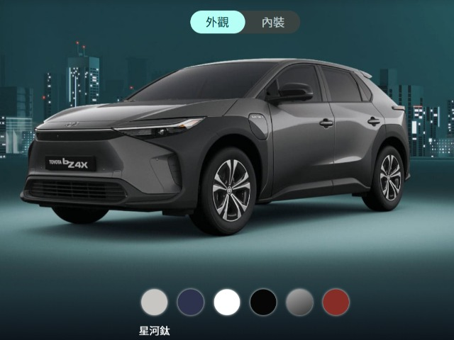
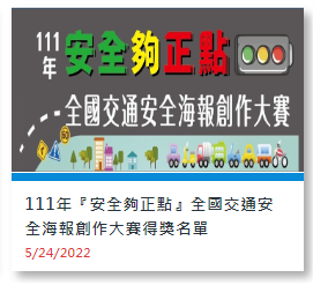

Projects
專案作品

各縣市政府專案執行
政策推動與政府補助案管理
- 執行國家或地方公共政策的推動與宣導，確保專案目標符合政府部門的施政方向與規範。
- 負責補助與資源爭取的相關流程，有效協助專案取得所需財務支持。
- 統籌規劃並執行多種類型、高規格的大型活動，包括國際論壇、記者發布會、成果展覽及宣導說明會。
- 負責新聞稿撰寫、社群媒體（臉書）內容經營及網站貼文上架，以確保政策資訊的精準傳播與高媒體曝光率。
- 負責專案管理與執行，確保所有目標有效推進。
- 掌控專案的時程規劃與成本支出，運用專業知識確保資源分配的最佳化，達成在預算內準時結案。

和泰汽車官網展示
客戶需求轉化與溝通管理
- 擔任客戶與內部製作團隊之間的溝通橋樑，主導雙向協商，將客戶對樣式與效果的抽象期望精確轉化為 3D 建模的執行規格。
- 確保專案在製作過程中能持續符合客戶的品牌或視覺要求，達成最終的交付標準。
- 根據客戶需求、技術難度與時程壓力，獨立進行服務成本結構分析，並精確製作報價單。
- 確保報價合理性與市場競爭力，有效為專案創造並維持利潤空間。
- 與美術/建模師團隊深度討論，協助解決 3D 場景、技術可行性與設計細節的衝突。
- 負責專案排程與進度追蹤，確保各階段任務能按時完成，保障專案準時交付。

教育部青年發展署百工一日一超牆職人
整合與 VR 數位內容採集
- 主導與指標性企業（如：群創、元晶太陽能）及高知名度各行業職人的合作洽談與關係維護，成功邀約其參與 VR360 數位內容拍攝。
- 統籌拍攝專案的行政與物流支援，確保 VR 數位素材的專業性、多樣性與時程符合政策要求。
- 執行專案啟動發布會的籌備，涵蓋媒體邀請、場地佈置、流程控管等。
- 規劃職人校園巡迴演講活動的行程、推廣職業知能與政策精神。
- 主導設計「職人網頁互動式遊戲」的用戶體驗與功能邏輯，將設計與功能規格精確對接給開發工程師與美術團隊，確保數位產品的創新性與技術可行性。

汽車協會網站維運
關鍵資訊即時更新與管理
- 依據協會政策與產業新聞，定期審核與更新網站內容。
- 擔任內容上架的窗口，協助客戶將提供的文案、圖片與檔案精準地上架至網站，並確保其呈現符合網站規範與視覺標準。